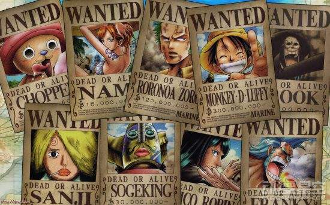

特别致谢
《海贼王》是日本漫画家尾田荣一郎作画的少年漫画作品，于1997年开始在《周刊少年JUMP》上连载。这部唯一还在更新的民工漫，不仅成为了《周刊少年JUMP》最重要的台柱，还带给许多粉丝们美好的回忆。为了迎接《海贼王》20周年纪念，最近尾田荣一郎亲手写了一份感谢信，我们就一起来看看吧。

在尾田荣一郎的感谢信中他这样写道：“请问，你现在多大了？20年前你已经出生了吗？当年17岁的路飞，在过了20年后也已经19岁了……好像有哪里不对？你已经知道路飞头上的草帽，是某人寄存在他这里的东西了吗？路飞最开始是独自一人出海冒险的，那时一个伙伴都没有。关于《海贼王》的回忆有很多，这其实都是源自于我的一个想法，那就是通过让读者们了解主角们年轻时的经历，来让大家成为主角们的儿时朋友。比如路飞小时候不擅长说谎，还总喜欢哭，即使他长大了也一点没变。索隆和娜美也是这样。正式因为大家见证了他们的成长，所以才能与路飞他们产生深厚的感情。属于他们的冒险终有一天会落下帷幕，但如果大家能陪他们一起走到最后的话，我一定会很欣慰。谢谢大家在这20年来对我的支持，请继续陪着他们吧！”